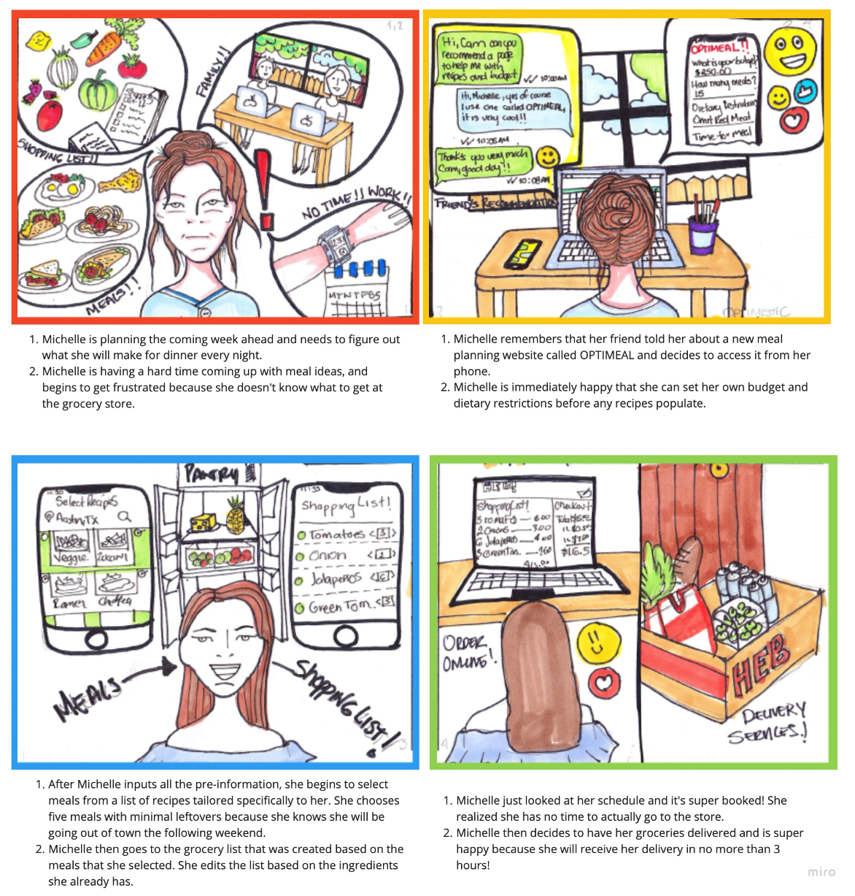
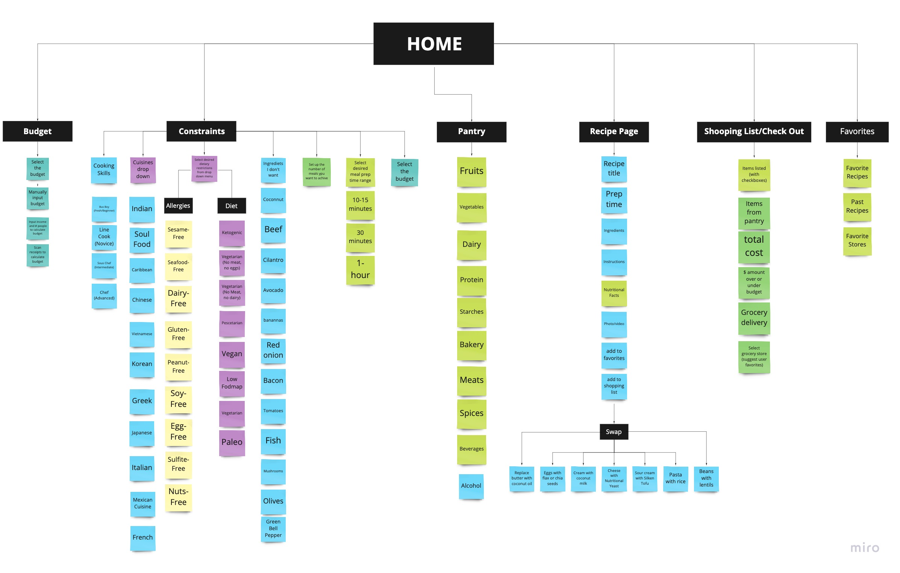
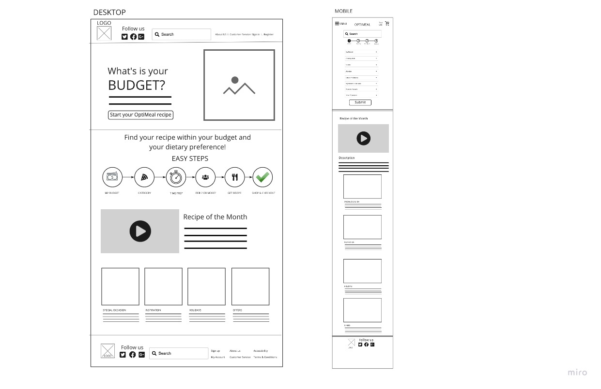
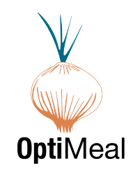

Overview
Novigi partnered with my UX team to redesign of its entire OptiMeal grocery budget application with the vision of becoming an ad based revenue model that will sell data to contributing vendors. Users will have data tailored towards their preference choices and in turn will choose items that help facilitate a few items to narrow recipe searches; eg. is a focus in pushing recipes of produce in season that is readily available, collection of data for analytical purposes and creating internal demand models.


Research
With research goals in mind, we gathered contextual information about the scope of low-income families and individual shoppers to see what services will best help their issues with meal preparation and spending.
We planned and conducted ten interviews to discover the pain points that people encounter when grocery shopping. We survyed 73 participants, primarily between the ages of 21-40, who are considered frequent grocery shoppers that like to cook.


Target Segment
"Who are we trying to reach?"


Brand User
After designating persona types and aligning this with our phasing strategy we were able to priortize who we would be focusing on supporting in the early design stages. The app focused on supporting the goals of Michelle Lee, our primary persona. We referred back to our persona throughout the project to guide design decisions, priorities, and create empathy among the client and our team.


Visualising the End-to-End
As a team, we created a storyboad to visualize and communicate the users end-to-end experience across various touch-points with the scheme. This allowed us to represent user pain points and see where we needed to focus our attention.

Gathering insights
To understand how users navigated the current OptiMeal app and what needed improvement, we conducted 7 user testing in which the users were asked to complete 5 navigation tasks. As a team, we synthesized each of our findings from interviews, survey responses, and arranged all the data into relevant categories.

After discovering users struggled with maintaining a grocery budget and are often frustrated, and overwhelmed while budgeting with the app current layout. We created a complete card sort to reorganize the current site into new categories. By doing so, the user flow helped us map out a new pathway for users, so that every avenue makes sense as we develop the prototype.

Wireframing
Our stakeholder provided our team with a sample mobile prototype of OptiMeal to demonstrate the primary features they required. I conducted workshops and sketching sessions with the team to visually map out the user flow and come up with a storyboard to capture the MVP.
We identified the following key features:
- Option to select cuisine preference/filter dietary restrictions
- Set Budget/ Number of Meals
- Meal "inspirations"

Detailed Specs
Before making those iterations and creating a hi-fi prototype, we created a UI style guide. A collaborative effort of how we saw the style for OptiMeal, beginning with the stakeholder's design inspiration photo.
The combination of these two colors work perfectly with our main goals and attributes. Both were tested and passed the accessibility test against the white background.

Testing & Iteration
Next, we tested users on their completion of the processes outlined by our designed task flow. Based on these insights, we made adjustments to sections of our user flow and prototype before moving forward with the final product.

Latest Iteration
My process involved focusing on each feature phase, I went through cycles of requirements, consensus, approvals, and detailed specs.
Link to Desktop Prototype

Results and takeaways
After multiple tests and iterations, our team was able to build a successful clickable prototype. We paid attention to making the features and navigation behind the responsive website clear and properly functional. Additionally, I have received positive feedback from users about the simplified configuration of their users, giving them peace of mind and security in their daily life and in their pocket. We did experience roadblocks of failing in certain areas of the prototype, which began to affect other flows within it. We were able to address this by scaling back verbiage, UI style, and making "call-to-actions" more visible.
What's next for OPTIMEAL?
- Further iterations are needed on the prototype to enhance the user experience. These iterations include testing the mobile prototype, adding animations, more UI elements and back-end development.
- OptiMeal is also a platform that will rely on successful partnerships to allow users to have groceries delivered to them.
- Novigi is building an original algorithm that OptiMeal will use. It is important that the algorithm be successful without having to completely change the user flow of OptiMeal. This will require further testing.